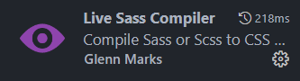
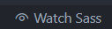
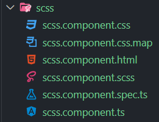
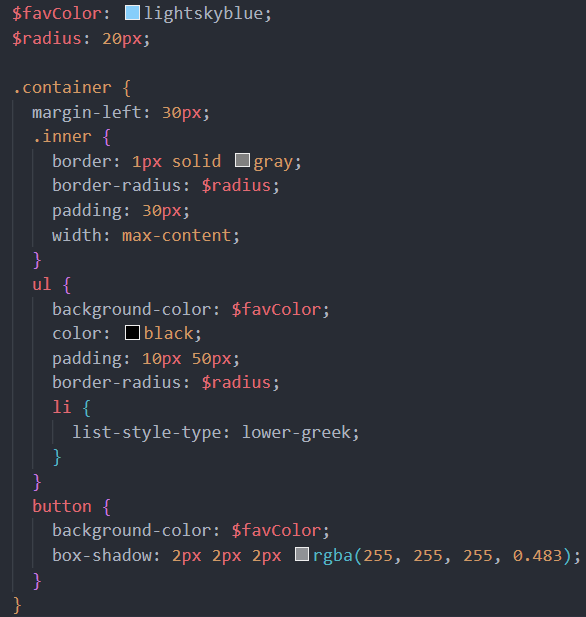
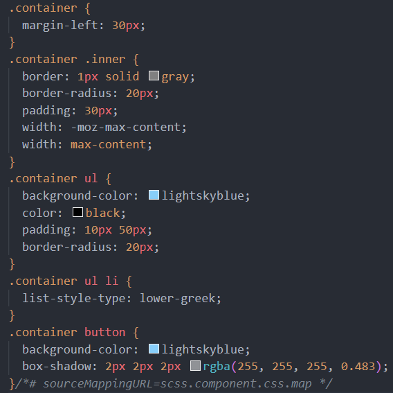
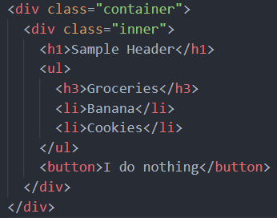

(Toggle scroll for easy viewing with code near the bottom of the page)
What is SCSS?
- SCSS stands for 'Sassy Cascading Stylesheets'
-
It's a mixture of Sass (syntactically awesome stylesheet) and CSS
(cascading stylesheets)
-
You may have noticed these styling options when generating a new Angular
project with the Angular CLI
-
As a CSS pre-processor, SCSS is an extension to CSS, containing the
benefits of Sass, while allowing plain ol' CSS as well, making it an
excellent stepping stone away from CSS
- SCSS supports nesting, variables, and much more
How do I incorporate SCSS into my application?
-
If you generate a new Angular project using the CLI and choose SCSS as
your styling option, you can use it from the get go without any additional
steps
-
If you are working on an existing project that uses CSS, first download
the extension 'Live Sass Compiler'

-
Rename the css file extension you'd like to work with to from .css to
.scss
-
You will see an error until you click 'Watch Sass', a button that was just
added to the bottom of your VS Code by the 'Live Sass Compiler' extension

-
While watching, this extension will automatically create a backing css
file in your component directory, where any SCSS you write, gets mapped
to, as browsers do not support SCSS

-
At any time, you can jump over and look at the code that is being created
for you in the css file, from the SCSS that you are writing
-
Take a look at the grocery list above and checkout the SCSS file compared
to the CSS file (that was automatically generate for us)
-
Take note of the nesting, and two variables defined at the top of the
SCSS file
SCSS

CSS

HTML
